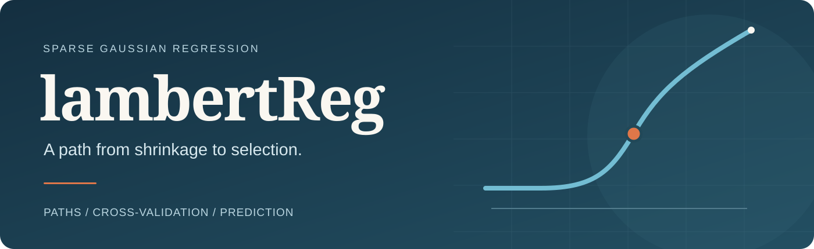
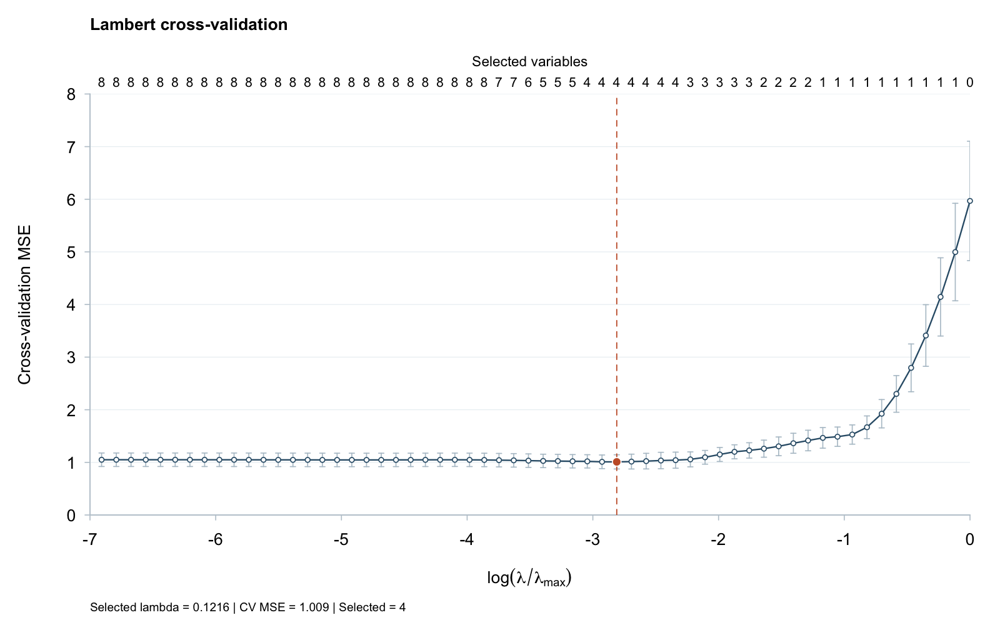

lambertReg fits sparse Gaussian regression with the Lambert penalty. A fixed penalty shape and training-only cross-validation give a direct workflow: fit a path, choose the penalty strength, inspect selected variables, and predict in the original units.
Explore how coefficients change as regularization varies.
Choose the penalty using five-fold cross-validation and inspect its error curve.
Extract selected coefficients, make predictions, and check numerical diagnostics.
Installation
R (>= 4.1.0), Rcpp, and an R-compatible C++ compiler are required. Clone the public repository and install the package:
To include the worked vignette, make knitr, rmarkdown, and Pandoc available, then build before installing:
A small example
library(lambertReg)
set.seed(42)
x <- matrix(rnorm(100 * 8), 100, 8)
colnames(x) <- paste0("x", 1:8)
y <- 2 * x[, 1] - x[, 2] + 0.5 * x[, 3] + rnorm(100)
train <- 1:80
foldid <- sample(rep(1:5, length.out = length(train)))
fit <- cv.lambert(x[train, ], y[train], foldid = foldid)
coef(fit)
predict(fit, newx = x[-train, ])
plot(fit)The 20 held-out observations do not enter scaling or tuning. The default CV path contains 60 penalty fractions. Predictors are centered and scaled within each training fold; coefficients and predictions are returned on the original scale. fit$lambda.min is the selected penalty for the full training sample.

This is a reproducible synthetic demonstration, not an empirical result from the paper. Error bars show one descriptive fold-based standard error. The orange marker identifies the CV-selected penalty.
Paths, predictions, and penalty tools
| Task | Function |
|---|---|
| Fit a regularization path | lambert() |
| Select the penalty strength | cv.lambert() |
| Extract coefficients or predict |
coef(), predict()
|
| Plot CV error or coefficient paths | plot() |
| Evaluate the penalty or scalar update |
lambert_penalty(), lambert_threshold()
|
The shape is fixed at c = 1; CV chooses the penalty strength. Plotting uses stored results. The nonconvex solver seeks a stationary solution; inspect fit$ok, fit$partial_search, and fit$cv_diagnostics before interpreting a fit.
Guides and reproducibility
- Getting started: fitting, tuning, prediction, and diagnostics.
- Example gallery: CV and coefficient-path plots.
- Data and reproduction guide: input definitions, saved folds, and reproducible outputs.
- Runnable example: the seed-42 demonstration, including input data, plots, and a SHA-256 manifest.
- Validation scope and contribution guide.
Citation and support
Use citation("lambertReg") or the repository’s CITATION.cff. The associated manuscript is The Lambert Penalty: Logarithmic Shrinkage for Sparse Regression (Bahadir Yuzbasi, 2026).
Source code · Report an issue · Version notes
GPL-3. Maintainer: Bahadir Yuzbasi b.yzb@hotmail.com.